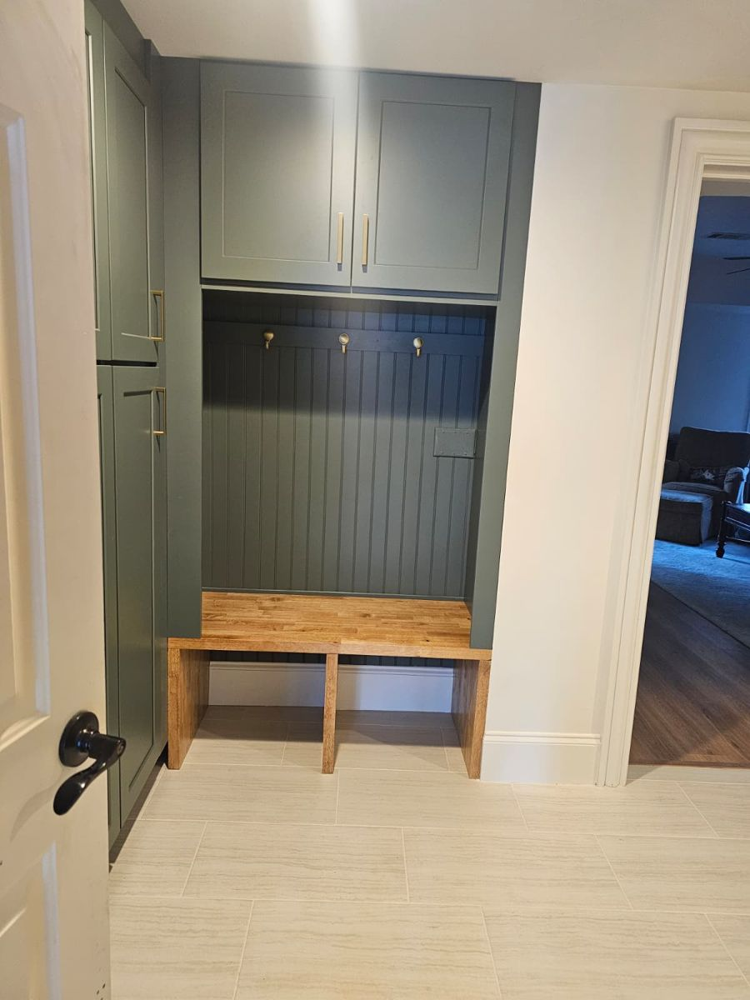

Para empezar
¿Solo remodelan o también construyen casas nuevas?
Hacemos ambas cosas. Building Ideas remodela y amplía casas existentes y construye casas nuevas a la medida, infill y para inversionistas en todo North Metro Atlanta. Llame o envíe texto al 404-771-9004 para hablar de su proyecto.
¿Trabajan en mi zona?
Trabajamos en todo North Metro Atlanta, incluidos Johns Creek, North Fulton, Forsyth, Cherokee, Gwinnett y Cobb. ¿No sabe si está dentro de nuestra zona? Llame o envíe texto al 404-771-9004 y se lo diremos.
¿Cómo sé cuánto va a costar antes de que empiecen?
Usted recibe un alcance y un presupuesto por escrito antes de empezar cualquier trabajo. Nuestra etapa de preconstrucción define primero en papel el diseño, los precios y los permisos, para que no tenga que adivinar. Agende una visita de planeación para empezar.
¿Qué debo tener listo para una visita de planeación?
Fotos del espacio, ideas que haya guardado, un rango de presupuesto y sus tiempos. Los planos, levantamientos o reglas de la HOA también ayudan si los tiene. Agende una visita de planeación para empezar.
Remodelaciones y ampliaciones
¿Remodelan cocinas y baños por separado?
Sí. Hacemos proyectos de cocinas y baños, además de remodelaciones completas. Llame o envíe texto al 404-771-9004 y cuéntenos qué tiene en mente.
¿Pueden agregar un segundo piso a mi casa?
Con frecuencia, sí. Depende de su estructura, su lote y las reglas locales. Revisamos la factibilidad durante la preconstrucción para que usted lo sepa antes de comprometerse. Agende una visita de planeación para empezar.
¿Podemos vivir en la casa durante la remodelación?
[Confirmar con Jair: depende del alcance. Enfoque típico para casas habitadas.]
Casas nuevas y desarrollo
¿Construyen casas a la medida en mi lote?
Sí. Construimos casas a la medida en todo North Metro Atlanta. Si ya tiene un lote, empezamos con la factibilidad y el presupuesto para que sepa qué conviene antes de comprometerse. Llame o envíe texto al 404-771-9004.
¿Qué es una casa infill?
Una casa infill es una casa nueva construida en un lote vacío o con una casa para demoler, dentro de un vecindario establecido. Le permite vivir donde quiere en una casa completamente nueva. Podemos ayudarle a revisar si un lote funciona.
¿Construyen para inversionistas?
Sí. Construimos casas para inversionistas y casas spec con presupuestos por escrito y disciplina de constructor, porque los márgenes ajustados no aguantan sorpresas. Vea nuestra página de Desarrollo residencial o llámenos.
¿Trabajan con prestamistas?
Sí. Trabajamos con prestamistas y socios en proyectos de construcción nueva y desarrollo. [Confirmar detalles con Building Ideas]
Planeación y permisos
¿Qué es la preconstrucción?
La preconstrucción es la planeación que se hace antes de empezar a construir: factibilidad, presupuesto, alcance, coordinación de diseño y guía de permisos. Resuelve las grandes preguntas en papel, donde los cambios cuestan poco. Llame o envíe texto al 404-771-9004 para preguntar por su proyecto.
¿Necesito preconstrucción para un proyecto pequeño?
No siempre. Para un trabajo sencillo, una visita de planeación puede ser suficiente. En remodelaciones completas, ampliaciones y casas nuevas, la preconstrucción es donde se detectan a tiempo la mayoría de las sorpresas.
¿Pueden ayudar con los permisos?
Sí. La guía de permisos es parte de nuestro servicio de diseño y preconstrucción, para que sepa lo que su proyecto necesita antes de empezar la construcción. Llame o envíe texto al 404-771-9004 para preguntar por el suyo.
Cómo es trabajar con nosotros
¿Con quién hablaré durante mi proyecto?
Tendrá un solo contacto de nuestro equipo familiar durante toda la obra. El fundador, Jair Contreras, dirige la relación en cada proyecto. Llame o envíe texto al 404-771-9004 para conocernos.
¿Tienen licencia y seguro?
[Licencia de GA # y detalles del seguro por confirmar antes del lanzamiento]
¿Todavía tiene una pregunta?
Llame o envíe texto al 404-771-9004. Hablará con nuestro equipo familiar.